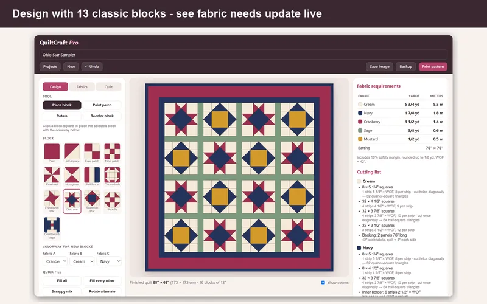

Free Quilt Calculators
Quick, accurate quilt math without the scrap-paper arithmetic. Cut sizes to the nearest 1/8", yardage rounded up to the next 1/8 yard and shown in meters too. Every page explains the formula, so you can see exactly where the numbers come from.
Binding calculator
How many binding strips to cut and how much fabric to buy for any quilt size.
Open calculator →Backing calculator
42" vs 108" wide backing compared, number of panels, seam direction and yardage.
Open calculator →Border calculator
One or two borders: cut width, strips, side and top lengths, yardage.
Open calculator →Half square triangle calculator
Cut sizes for HST 2, 4 and 8 at a time, QST hourglass and no-waste flying geese.
Open calculator →Fabric yardage calculator
How many squares or rectangles fit across the WOF, strips needed and yardage.
Open calculator →Quilt size chart
Standard baby, throw, twin, full, queen and king quilt sizes, plus a custom size calculator.
Open calculator →Planning a whole quilt?
These calculators handle one piece of the puzzle at a time. QuiltCraft Pro does the whole quilt: design with classic blocks, and it works out every fabric's yardage and cutting list as you go.
- Drag-and-drop block designer with your own fabric colors
- Live yardage for every fabric, borders, binding and backing
- Full cutting list and a printable pattern
- Works offline in your browser, no account, no subscription

Which calculator do I need?
Start with the quilt size chart if you are still deciding how big to make the quilt. Once the top is pieced, measure it and use the border calculator, then the backing and binding calculators to finish. While you are cutting blocks, the HST calculator and the yardage calculator tell you what size to cut and how much fabric you need.
Frequently asked questions
Are these quilt calculators free?
Yes. Every calculator on this site is free, needs no sign-up and runs right in your browser.
Do the calculators work in metric?
Measurements are entered in inches, the standard for quilting patterns and rulers. Every yardage result is also shown in meters, rounded up to the next 0.1 m.
How accurate are the results?
Cut sizes are shown to the nearest 1/8 inch and yardage is always rounded up to the next 1/8 yard, so you will not come up short. Each page shows the formula so you can check the math yourself.